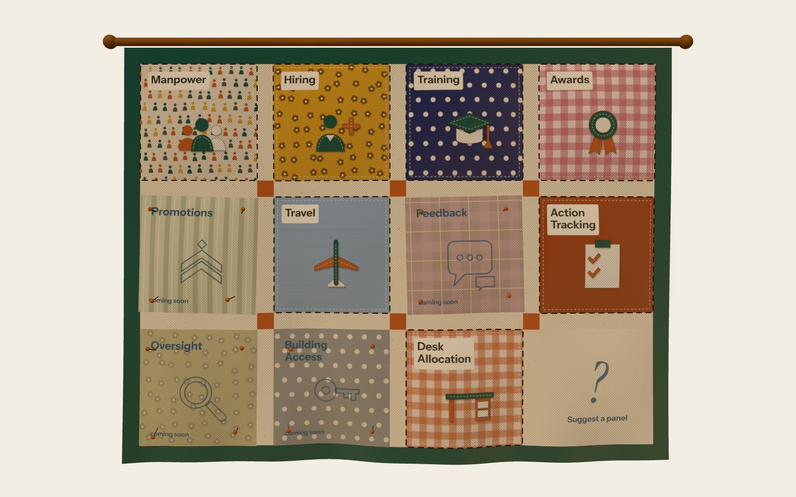

Workforce Engagement, Actions & Visibility Environment
Every part of your workforce, woven together.
WEAVE is the planned web dashboard that grows out of the Coalesce Excel add-in. Hiring, travel, training, awards and the rest of the workforce business, in one place, with new panels added release by release.

What's in it
Sewn in
Pinned for later
Why a quilt?
A quilt is a dashboard: each block is one panel. The sashing, the strips sewn between the blocks, becomes the gutters between the tiles. Live panels are sewn in, and planned ones are pinned in place until their release.
Coalesce lives on as the Manpower patch.